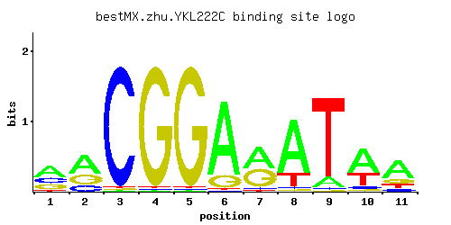

← All factors / TF RECORD
YKL222C
No recorded aliases
Function unknown
01 / RECOMMENDED MATRIX
Best-performing DNA-binding model.

Fisher’s P-value0.3338
Information content11.38
Max PWM score10.86
Recommended cutoff7.52
View and copy the recommended matrices ↘
Position frequency matrix (PFM)
A | 0.48 0.53 0.01 0.01 0.01 0.83 0.49 0.76 0.11 0.59 0.60 C | 0.25 0.18 0.97 0.01 0.01 0.01 0.05 0.03 0.02 0.08 0.11 G | 0.23 0.29 0.01 0.97 0.97 0.15 0.43 0.02 0.01 0.04 0.17 T | 0.04 0.01 0.01 0.01 0.01 0.01 0.03 0.19 0.86 0.29 0.12
Position count matrix (PCM)
A | 48 53 1 1 1 83 49 76 11 59 60 C | 25 18 97 1 1 1 5 3 2 8 11 G | 23 28 1 97 97 15 43 2 1 4 17 T | 4 1 1 1 1 1 3 19 86 28 12
Position weight matrix (PWM)
A | 0.41 0.50 -3.47 -3.47 -3.47 0.95 0.43 0.86 -1.07 0.61 0.63 C | 0.33 0.00 1.68 -2.89 -2.89 -2.89 -1.28 -1.79 -2.20 -0.81 -0.49 G | 0.25 0.48 -2.89 1.68 1.68 -0.18 0.87 -2.20 -2.89 -1.50 -0.06 T | -2.08 -3.47 -3.47 -3.47 -3.47 -3.47 -2.37 -0.52 0.99 -0.10 -0.98
02 / COMPARATIVE BENCHMARKS
Alternative candidate matrices 3
Historical matrix candidates from the original ScerTF database. Expand a source to inspect its original logo, scores, and matrix values.
YKL222CBadis et. al.P = 0.6217View matrix ↘
YKL222CFoat et. al.P = 1View matrix ↘
YKL222CZhao and StormoP = 0.1191View matrix ↘
03 / EXPERIMENTAL CONTEXT
Gene-level annotations and interactions.
Genes bound in ChIP-chip experiments 36 genes
YBR258C, YBR259W, YCR082W, YDL038C, YDL039C, YDL089W, YDL090C, YDL137W, YGL155W, YGR182C, YHL002W, YHL003C, YHR104W, YIL124W, YJR093C, YJR133W, YJR140C, YJR141W, YKL201C, YKL221W, YKL222C, YLL028W, YLR293C, YLR319C, YLR320W, YMR268C, YMR269W, YNL025C, YNL212W, YNL213C, YNL249C, YOL137W, YOL138C, YOR249C, YPL180W, YPL182C
Genes affected by TF deletion 22 genes
YLR467W, YBL079W, YPL016W, YOL075C, YPL272C, YCL014W, YER029C, YGR296W, YBR201W, YCR087W, YDL011C, YGR041W, YOL002C, YGL029W, YDL077C, YKL093W, YHR219W, YKL222C, YMR034C, YDR153C, YFL068W, YLR177W
Genes supported by both experiments 1 genes
YKL222C